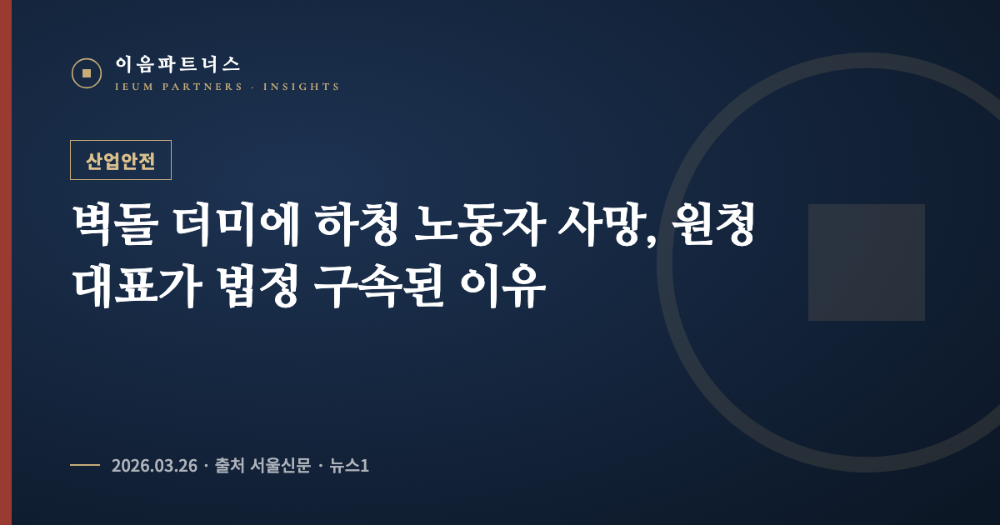

벽돌 더미에 하청 노동자 사망, 원청 대표가 법정 구속된 이유

공사나 작업 일부를 협력업체에 맡겼다면 그 현장의 안전은 누구 몫일까요. 2026년 3월, 부산의 한 건설 현장 사망 사고로 원청 종합건설사 대표가 실형을 선고받고 법정에서 구속됐습니다. 이 글에서는 사고 경위와 판결 내용, 그리고 하청을 쓰는 회사가 확인할 점을 정리합니다.
부산에서 중대재해처벌법 위반으로 경영책임자에게 실형이 나온 것은 이번이 처음입니다. 협력업체와 함께 일하는 회사라면 남의 일로 보기 어려운 판결입니다. 우리 회사 도급 현장 관리가 걱정되신다면 카카오톡 채널 이음파트너스로 편하게 물어 주세요.
어떤 사고였나
사고는 2023년 1월 15일 부산 중구의 한 숙박시설 신축 공사 현장에서 조경 공사 도중 일어났습니다. 나무 받침대에 올린 1.45톤 무게의 벽돌 더미를 크레인으로 옮기던 중 받침대가 부러지면서 벽돌이 쏟아졌습니다. 지상에 있던 하청업체 소속 20대 작업자가 머리를 크게 다쳐 숨졌고, 지나가던 행인 2명도 다쳤습니다.
조사 결과 받침대는 이미 한쪽으로 기울어 있어 사고 위험이 있었습니다. 그런데도 인양 상태 점검, 작업자 안전모 착용 확인, 행인 출입 통제 같은 기본 조치가 없었던 것으로 드러났습니다.
법원은 왜 원청 대표에게 실형을 선고했나
부산지방법원은 중대재해처벌법 위반(산업재해치사) 혐의로 기소된 원청 건설사 대표에게 징역 1년을 선고하고 법정 구속(선고 직후 법정에서 바로 구속하는 것)했습니다. 법인에는 벌금 1억 2천만 원이 선고됐습니다.
| 구분 | 내용 |
|---|---|
| 사고 | 2023년 1월 15일, 부산 중구 숙박시설 신축 현장 |
| 피해 | 하청 20대 작업자 1명 사망, 행인 2명 부상 |
| 원인 | 기울어진 나무 받침대가 부러지며 1.45톤 벽돌 더미가 쏟아짐 |
| 1심 판결 | 원청 대표 징역 1년·법정 구속, 법인 벌금 1억 2천만 원(2026년 3월) |
재판부는 대표가 “안전 등을 종합적으로 관리하고 구축해야 할 의무를 소홀히 해” 사망 사고와 시민 상해를 일으킨 책임이 있다고 밝혔습니다(서울신문). 숨진 사람이 하청 직원이어도, 원청이 관리하는 현장이라면 원청 대표의 책임이 될 수 있다는 점을 보여 줍니다.
다만 이 판결은 1심입니다. 2026년 5월에는 2심 재판에서 대표 측이 위헌심판 결과를 지켜봐야 한다는 주장을 폈다는 보도가 나와, 최종 결론은 더 지켜봐야 합니다(뉴스1).
하청을 쓰는 회사에 주는 의미
이번 사고의 원인은 복잡한 기술 문제가 아니었습니다. 기울어진 받침대 점검, 안전모 확인, 출입 통제처럼 기본 조치가 빠졌습니다. 중대재해처벌법은 이런 기본 조치가 현장에서 실제로 지켜지도록 체계를 만드는 일을 경영책임자에게 맡기고 있습니다.
대표님이 지금 확인할 것
- 크레인 인양처럼 위험한 작업 전에 장비와 받침대 상태를 누가 점검하고 기록하는지
- 원청과 협력업체 가운데 누가 보호구 착용과 작업 구역 출입 통제를 맡아 확인하는지 정해 두었는지
- 도로나 인도와 맞닿은 현장이라면 낙하물 위험 구역을 막아 두었는지
참고한 자료
- ‘공사장 벽돌 사망 사고’ 원청 대표 법정 구속…부산서 ‘중처법’ 첫 실형 — 서울신문 (2026.03.26)
- '중처법 실형' 받은 건설사 대표…2심서 "위헌심판 결과 봐야" — 뉴스1 (2026.05.18)
협력업체와 함께 일하는 현장의 안전 책임을 어떻게 나눌지 고민이시라면 카카오톡 채널 이음파트너스에서 함께 정리해 보실 수 있습니다.
※ 이 글은 일반적인 정보 제공을 위한 것으로, 개별 사안은 세무사·노무사 등 전문가와 함께 확인하시기 바랍니다.